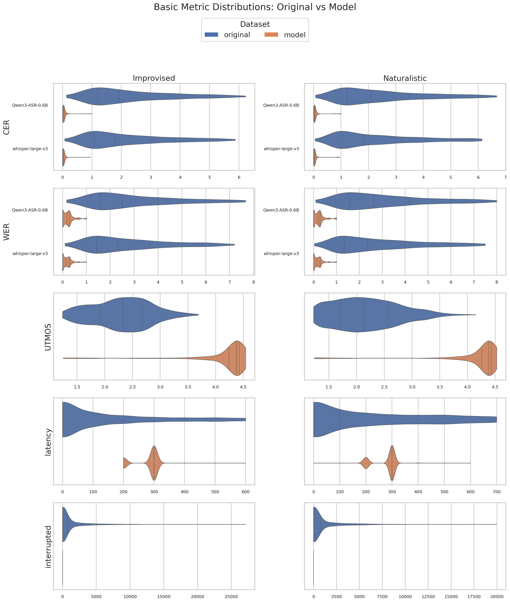
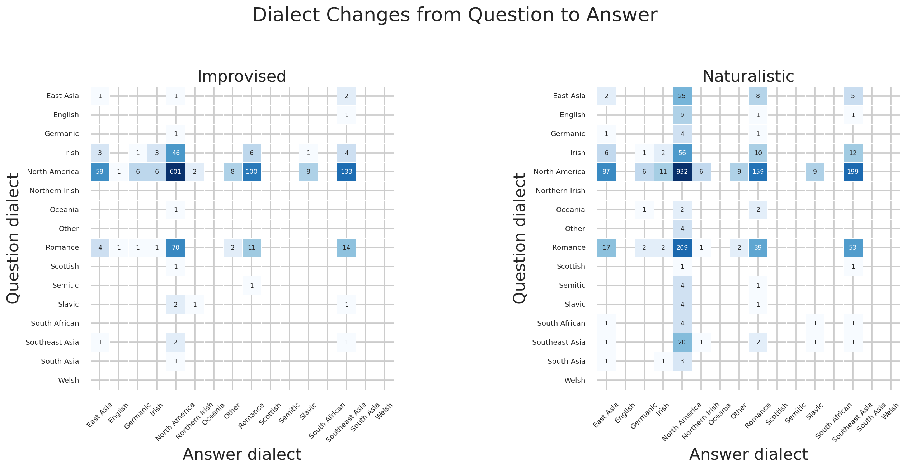
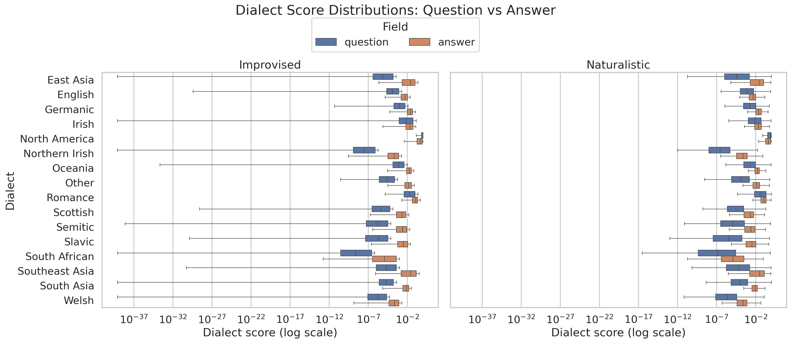
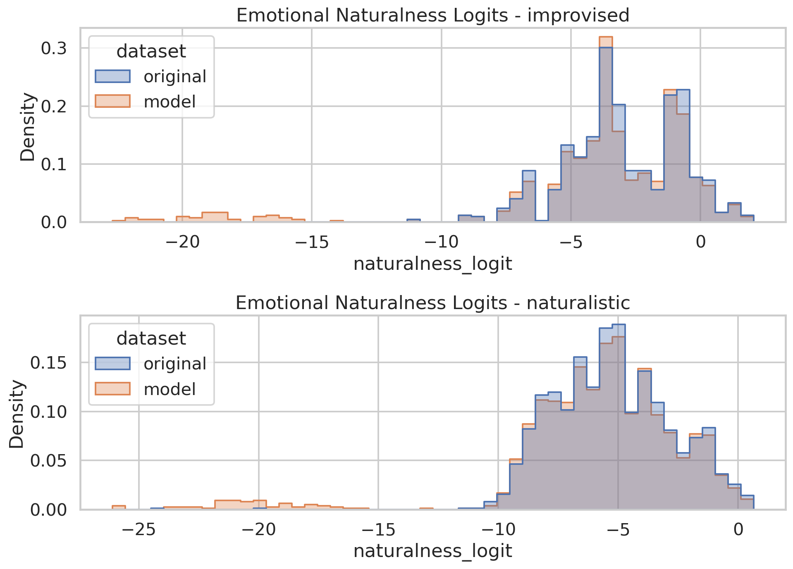
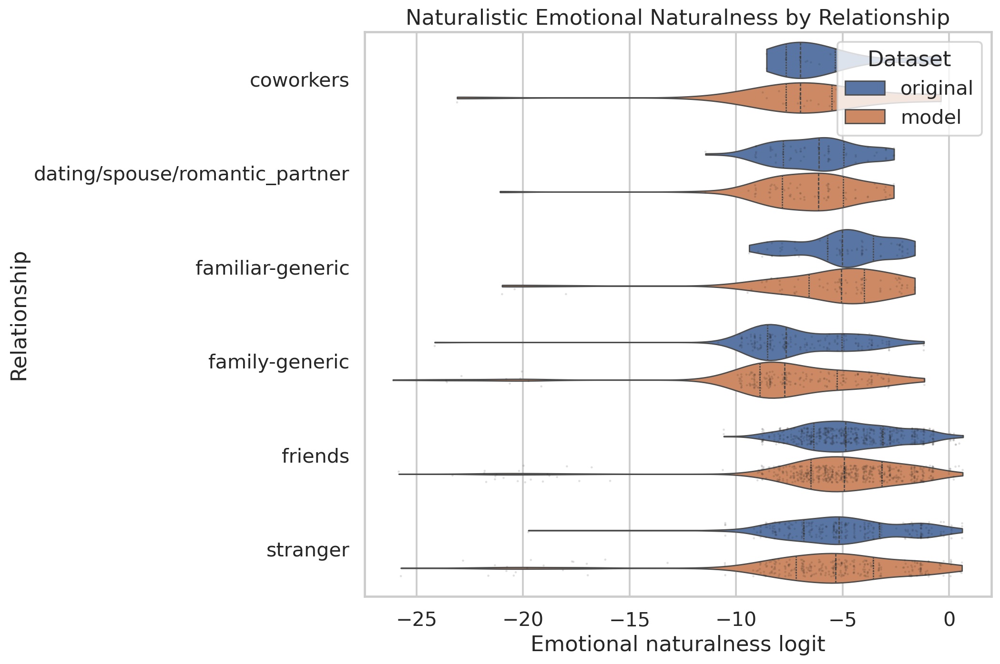
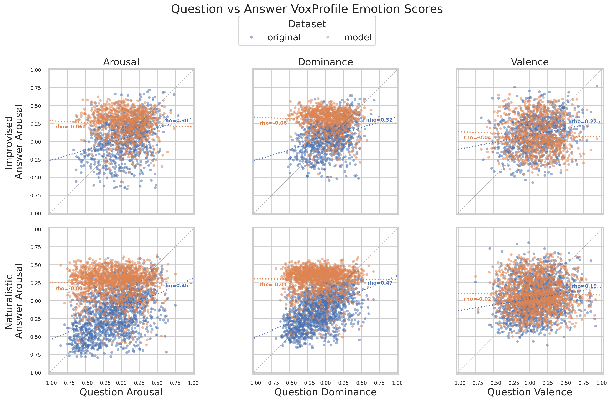
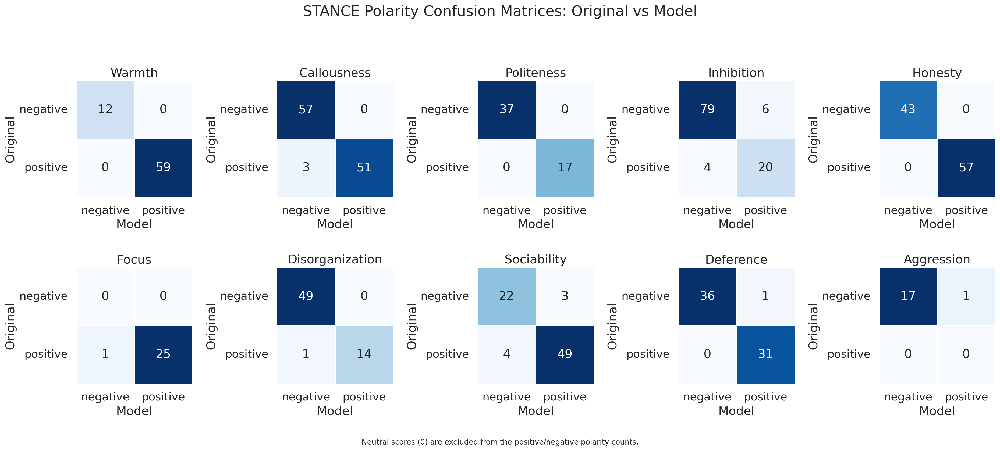
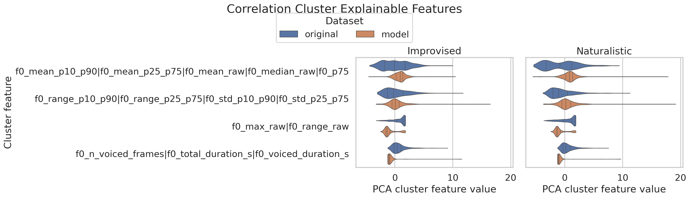
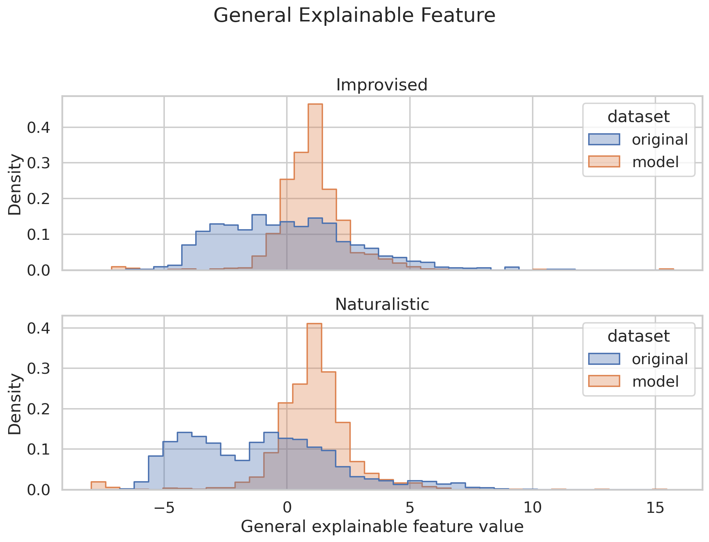
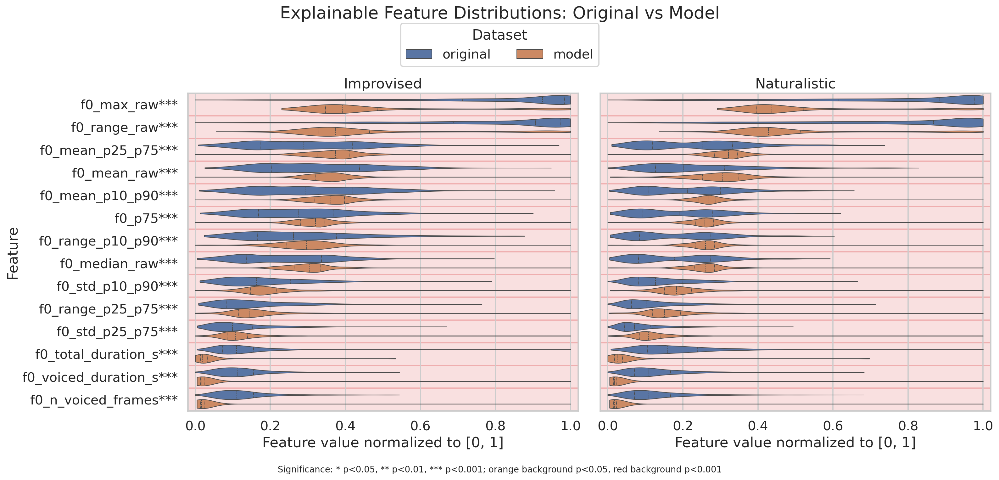

Executive Summary
This report combines the simplified text report, Stage 1 metric tables, and Stage 2 figures into a browsable HTML document.
Improvised
Emotional naturalness diff: -0.8587 (p=0.0124)
Basic metrics: 8 metrics summarized
Language ID: English language detected in original answers (%): 98.1771%; English language detected in model answers (%): 96.2674%
Dialect ID: 32 dialect percentage rows
Mean STANCE diff: -0.0105 across 10 stances
Best explainable AUROC: f0_voiced_duration_s (0.9645)
Naturalistic
Emotional naturalness diff: -0.6279 (p=0.0127)
Basic metrics: 8 metrics summarized
Language ID: English language detected in original answers (%): 97.6167%; English language detected in model answers (%): 94.6498%
Dialect ID: 32 dialect percentage rows
Best explainable AUROC: f0_n_voiced_frames (0.9529)
Basic Metrics
Basic metrics come from script 10 and include ASR-specific CER/WER columns, UTMOS, latency, interruption counts, and interruption overlap duration when available. If original base metrics were not generated, the table reports model means and standard deviations.
| subset | metric | mean_diff | std_diff | p_value | n | detail |
|---|---|---|---|---|---|---|
| improvised | CER_Qwen3-ASR-0.6B | -4.5220 | 5.4932 | 0.0000 | 1151 | model-original mean difference; p-value is Mann-Whitney U Test |
| improvised | CER_whisper-large-v3 | -4.2513 | 5.2116 | 0.0000 | 1152 | model-original mean difference; p-value is Mann-Whitney U Test |
| improvised | WER_Qwen3-ASR-0.6B | -5.4682 | 6.7284 | 0.0000 | 1151 | model-original mean difference; p-value is Mann-Whitney U Test |
| improvised | WER_whisper-large-v3 | -5.1518 | 6.2949 | 0.0000 | 1152 | model-original mean difference; p-value is Mann-Whitney U Test |
| improvised | UTMOS | 1.8926 | 0.7523 | 0.0000 | 1152 | model-original mean difference; p-value is Mann-Whitney U Test |
| improvised | latency | -121.7882 | 982.2583 | 1.560e-57 | 1152 | model-original mean difference; p-value is Mann-Whitney U Test |
| improvised | interrupted | -1000.6181 | 2402.3845 | 8.784e-132 | 1152 | model-original mean difference; p-value is Mann-Whitney U Test; interrupted overlap duration in ms, with 0 for non-interruptions |
| improvised | interruptions count | -481.0000 | 1152 | model-original interruption count difference; model_count=0; original_count=481 | ||
| naturalistic | CER_Qwen3-ASR-0.6B | -4.9950 | 6.5040 | 0.0000 | 2052 | model-original mean difference; p-value is Mann-Whitney U Test |
| naturalistic | CER_whisper-large-v3 | -4.5331 | 5.9682 | 0.0000 | 2056 | model-original mean difference; p-value is Mann-Whitney U Test |
| naturalistic | WER_Qwen3-ASR-0.6B | -5.9010 | 7.7242 | 0.0000 | 2052 | model-original mean difference; p-value is Mann-Whitney U Test |
| naturalistic | WER_whisper-large-v3 | -5.4249 | 6.9838 | 0.0000 | 2056 | model-original mean difference; p-value is Mann-Whitney U Test |
| naturalistic | UTMOS | 2.0265 | 0.8202 | 0.0000 | 2056 | model-original mean difference; p-value is Mann-Whitney U Test |
| naturalistic | latency | -673.5409 | 1768.8558 | 1.033e-11 | 2056 | model-original mean difference; p-value is Mann-Whitney U Test |
| naturalistic | interrupted | -1008.9844 | 2433.7838 | 1.767e-218 | 2056 | model-original mean difference; p-value is Mann-Whitney U Test; interrupted overlap duration in ms, with 0 for non-interruptions |
| naturalistic | interruptions count | -812.0000 | 2056 | model-original interruption count difference; model_count=0; original_count=812 |

Basic metric histogram gallery


Language ID
Language ID reports the percentage of answer audio rows whose detected language is English (eng) in language_id.csv.
| subset | % Eng in models' answers | % Eng in original answers |
|---|---|---|
| improvised | 96.267361 | 98.177083 |
| naturalistic | 94.649805 | 97.616732 |
Dialect ID
Dialect ID reports the percentage of question and answer rows assigned to each VoxLect dialect class. The confusion matrix counts question-to-answer dialect changes; the box plot compares the full question and answer score vectors for each class.
| Subset | Question/Answer | East Asia | English | Germanic | Irish | North America | Northern Irish | Oceania | Other | Romance | Scottish | Semitic | Slavic | South African | Southeast Asia | South Asia | Welsh |
|---|---|---|---|---|---|---|---|---|---|---|---|---|---|---|---|---|---|
| improvised | Question | 0.347222 | 0.086806 | 0.086806 | 5.555556 | 80.121528 | 0.000000 | 0.086806 | 0.000000 | 9.027778 | 0.086806 | 0.086806 | 0.347222 | 0.000000 | 0.347222 | 0.086806 | 0.0 |
| improvised | Answer | 6.041479 | 0.180343 | 0.721371 | 0.901713 | 65.464382 | 0.270514 | 0.000000 | 0.901713 | 10.640216 | 0.000000 | 0.000000 | 0.811542 | 0.000000 | 14.066727 | 0.000000 | 0.0 |
| naturalistic | Question | 1.945525 | 0.535019 | 0.291829 | 4.231518 | 68.968872 | 0.000000 | 0.243191 | 0.194553 | 15.807393 | 0.097276 | 0.243191 | 0.243191 | 0.340467 | 1.264591 | 0.243191 | 0.0 |
| naturalistic | Answer | 5.960946 | 0.000000 | 0.513875 | 0.822199 | 65.621788 | 0.411100 | 0.000000 | 0.565262 | 11.510791 | 0.000000 | 0.000000 | 0.565262 | 0.000000 | 14.028777 | 0.000000 | 0.0 |


Emotional Naturalness
Naturalness is summarized as the paired test-set logit difference between model and original utterances. Positive values mean higher model logits than original logits.
| subset | metric | mean_diff | std_diff | p_value | n |
|---|---|---|---|---|---|
| improvised | Emotional naturalness | -0.8587 | 3.4563 | 0.0124 | 867 |
| improvised | Emotional naturalness by relationship: collaborative_storytelling | -0.0209 | 4 | ||
| improvised | Emotional naturalness by relationship: grounded_gesture | -1.9113 | 8 | ||
| improvised | Emotional naturalness by relationship: ipc_conversation | -1.7426 | 18 | ||
| improvised | Emotional naturalness by relationship: stranger | -0.8337 | 837 | ||
| naturalistic | Emotional naturalness | -0.6279 | 3.0544 | 0.0127 | 1455 |
| naturalistic | Emotional naturalness by relationship: collaborative_storytelling | -0.0279 | 5 | ||
| naturalistic | Emotional naturalness by relationship: coworkers | -0.6235 | 27 | ||
| naturalistic | Emotional naturalness by relationship: dating/spouse/romantic_partner | -0.2364 | 79 | ||
| naturalistic | Emotional naturalness by relationship: familiar-generic | -0.5767 | 87 | ||
| naturalistic | Emotional naturalness by relationship: family-generic | -0.6813 | 214 | ||
| naturalistic | Emotional naturalness by relationship: friends | -0.5649 | 645 | ||
| naturalistic | Emotional naturalness by relationship: grounded_gesture | -2.4577 | 19 | ||
| naturalistic | Emotional naturalness by relationship: ipc_conversation | -0.0352 | 46 | ||
| naturalistic | Emotional naturalness by relationship: stranger | -0.8087 | 333 |

The relationship histogram plot breaks naturalistic emotional naturalness logits down by relationship label.

The emotion scatter plot compares full-question and full-answer Arousal, Dominance, and Valence scores normalized to [-1, 1]. Dotted lines show per-dataset correlations with rho labels.

STANCEs
STANCE metrics compare LLM and original scores for each STANCE question. Naturalistic STANCEs are omitted because they are not computed in this benchmark pipeline.
| subset | metric | mean_diff | std_diff | p_value | n | detail |
|---|---|---|---|---|---|---|
| improvised | STANCE same sign (%) | 96.5665 | 699 | percentage of valid paired rows where score_original and score_llm have the same sign, with zero treated as neutral; numerator=675; denominator=699 | ||
| improvised | STANCE model positive when original negative (%) | 3.0303 | 363 | percentage among valid paired rows with score_original < 0; numerator=11; denominator=363 | ||
| improvised | STANCE model negative when original positive (%) | 3.8690 | 336 | percentage among valid paired rows with score_original > 0; numerator=13; denominator=336 | ||
| improvised | Q0 | 0.0000 | 0.0000 | 1.0000 | 71 | Based on the audio, does the TARGET speaker sound warm and affiliative, or cold and detached? |
| improvised | Q1 | -0.0991 | 0.6023 | 0.7347 | 111 | Based on the audio, does the TARGET speaker sound compassionate and supportive, or callous and unsympathetic? |
| improvised | Q2 | 0.0000 | 0.0000 | 1.0000 | 54 | Based on the audio, does the TARGET speaker sound polite and respectful, or rude and disrespectful? |
| improvised | Q3 | 0.0550 | 1.0438 | 0.9381 | 109 | Based on the audio, does the TARGET speaker sound assertive and self-confident, or hesitant and inhibited? |
| improvised | Q4 | 0.0100 | 0.1000 | 0.9524 | 100 | Based on the audio, does the TARGET speaker sound straightforward and sincere, or sly and manipulative? |
| improvised | Q5 | -0.1538 | 0.7845 | 0.3363 | 26 | Based on the audio, does the TARGET speaker sound attentive and focused, or confused and distracted? |
| improvised | Q6 | -0.0469 | 0.3750 | 0.9621 | 64 | Based on the audio, does the TARGET speaker sound organized and goal-driven, or disorganized and unmotivated? |
| improvised | Q7 | -0.0513 | 1.2049 | 0.8666 | 78 | Based on the audio, does the TARGET speaker sound socially engaged and expressive with the other speaker, or withdrawn and disengaged? |
| improvised | Q8 | 0.0147 | 0.4049 | 0.9423 | 68 | Based on the audio, does the TARGET speaker accommodate and yield to the other speaker’s preferences, or do they try to control and dominate? |
| improvised | Q9 | 0.1667 | 0.7071 | 0.3449 | 18 | Based on the audio, does the TARGET speaker stay calm and avoid confrontation, or are they hostile and aggressive? |

Explainable Features
Explainable feature rows report model-minus-original mean differences, p-values, and the Stage 41 classification AUROC/accuracy. Correlation-cluster rows come from script 41 PCA cluster features.
Correlation Cluster Features
| subset | metric | mean_diff | std_diff | p_value | n | detail |
|---|---|---|---|---|---|---|
| improvised | corr_cluster_001_rho0p8 | -1.7055 | 1.5887 | 3.373e-175 | 1152 | script 41 PCA cluster feature model-original; p-value is Mann-Whitney U Test; source_features=f0_max_raw|f0_range_raw; validates_in_test=True; test_mean_abs_spearman=0.9870; pca_explained_variance_ratio=0.9981 |
| improvised | corr_cluster_002_rho0p8 | 0.7728 | 2.4455 | 6.954e-25 | 1152 | script 41 PCA cluster feature model-original; p-value is Mann-Whitney U Test; source_features=f0_mean_p10_p90|f0_mean_p25_p75|f0_mean_raw|f0_median_raw|f0_p75; validates_in_test=True; test_mean_abs_spearman=0.9542; pca_explained_variance_ratio=0.9804 |
| improvised | corr_cluster_003_rho0p8 | -1.3720 | 1.9974 | 0.0000 | 1152 | script 41 PCA cluster feature model-original; p-value is Mann-Whitney U Test; source_features=f0_n_voiced_frames|f0_total_duration_s|f0_voiced_duration_s; validates_in_test=True; test_mean_abs_spearman=0.9417; pca_explained_variance_ratio=0.9388 |
| improvised | corr_cluster_004_rho0p8 | 0.0098 | 2.5612 | 2.487e-05 | 1152 | script 41 PCA cluster feature model-original; p-value is Mann-Whitney U Test; source_features=f0_range_p10_p90|f0_range_p25_p75|f0_std_p10_p90|f0_std_p25_p75; validates_in_test=True; test_mean_abs_spearman=0.9037; pca_explained_variance_ratio=0.9357 |
| improvised | general_explainable_feature_rho0p8 | 1.0314 | 3.0916 | 2.518e-36 | 1152 | script 41 PCA cluster feature model-original; p-value is Mann-Whitney U Test; source_features=corr_cluster_001_rho0p8|corr_cluster_002_rho0p8|corr_cluster_003_rho0p8|corr_cluster_004_rho0p8; validates_in_test=True; test_mean_abs_spearman=nan; pca_explained_variance_ratio=0.5558 |
| naturalistic | corr_cluster_001_rho0p8 | -1.4103 | 1.7595 | 9.765e-210 | 2056 | script 41 PCA cluster feature model-original; p-value is Mann-Whitney U Test; source_features=f0_max_raw|f0_range_raw; validates_in_test=True; test_mean_abs_spearman=0.9888; pca_explained_variance_ratio=0.9980 |
| naturalistic | corr_cluster_002_rho0p8 | 1.5123 | 3.1274 | 3.551e-86 | 2056 | script 41 PCA cluster feature model-original; p-value is Mann-Whitney U Test; source_features=f0_mean_p10_p90|f0_mean_p25_p75|f0_mean_raw|f0_median_raw|f0_p75; validates_in_test=True; test_mean_abs_spearman=0.9573; pca_explained_variance_ratio=0.9698 |
| naturalistic | corr_cluster_003_rho0p8 | -1.2338 | 1.8623 | 0.0000 | 2056 | script 41 PCA cluster feature model-original; p-value is Mann-Whitney U Test; source_features=f0_n_voiced_frames|f0_total_duration_s|f0_voiced_duration_s; validates_in_test=True; test_mean_abs_spearman=0.9494; pca_explained_variance_ratio=0.9489 |
| naturalistic | corr_cluster_004_rho0p8 | 0.9053 | 2.5694 | 1.428e-101 | 2056 | script 41 PCA cluster feature model-original; p-value is Mann-Whitney U Test; source_features=f0_range_p10_p90|f0_range_p25_p75|f0_std_p10_p90|f0_std_p25_p75; validates_in_test=False; test_mean_abs_spearman=0.8963; pca_explained_variance_ratio=0.8992 |
| naturalistic | general_explainable_feature_rho0p8 | 2.0897 | 3.4761 | 5.043e-168 | 2056 | script 41 PCA cluster feature model-original; p-value is Mann-Whitney U Test; source_features=corr_cluster_001_rho0p8|corr_cluster_002_rho0p8|corr_cluster_003_rho0p8|corr_cluster_004_rho0p8; validates_in_test=True; test_mean_abs_spearman=nan; pca_explained_variance_ratio=0.4980 |


Improvised
Highest AUROC Features
| metric | mean_diff | std_diff | p_value | n | auroc | accuracy |
|---|---|---|---|---|---|---|
| f0_voiced_duration_s | -7.4391 | 11.6717 | 0.0000 | 1152 | 0.9645 | 0.8411 |
| f0_n_voiced_frames | -743.2561 | 1166.9326 | 0.0000 | 1152 | 0.9645 | 0.8411 |
| f0_total_duration_s | -13.1162 | 18.7068 | 4.873e-296 | 1152 | 0.9424 | 0.8069 |
| f0_range_raw | -129.7654 | 121.2301 | 1.053e-176 | 1151 | 0.8410 | 0.8085 |
| f0_max_raw | -127.9607 | 119.3084 | 6.055e-174 | 1151 | 0.8383 | 0.8102 |
| f0_max_raw | -127.9607 | 119.3084 | 6.055e-174 | 1151 | 0.8383 | 0.8102 |
| f0_median_raw | 20.2628 | 46.6951 | 3.998e-38 | 1151 | 0.6553 | 0.6739 |
| f0_median_raw | 20.2628 | 46.6951 | 3.998e-38 | 1151 | 0.6553 | 0.6739 |
| f0_mean_p25_p75 | 18.4527 | 45.7100 | 3.885e-35 | 1151 | 0.6488 | 0.6822 |
| f0_mean_p25_p75 | 18.4527 | 45.7100 | 3.885e-35 | 1151 | 0.6488 | 0.6822 |
Lowest AUROC Features
| metric | mean_diff | std_diff | p_value | n | auroc | accuracy |
|---|---|---|---|---|---|---|
| f0_range_p25_p75 | -0.8615 | 44.9974 | 4.631e-04 | 1151 | 0.5421 | 0.5202 |
| f0_std_p25_p75 | -0.1974 | 14.1605 | 3.802e-04 | 1151 | 0.5428 | 0.5089 |
| f0_std_p10_p90 | -0.0646 | 21.0072 | 1.023e-04 | 1151 | 0.5467 | 0.5354 |
| f0_range_p10_p90 | 3.7164 | 71.4542 | 6.708e-08 | 1151 | 0.5650 | 0.5818 |
| f0_mean_raw | 7.8537 | 44.1719 | 1.541e-12 | 1151 | 0.5851 | 0.6461 |
| f0_mean_raw | 7.8537 | 44.1719 | 1.541e-12 | 1151 | 0.5851 | 0.6461 |
| f0_p75 | 14.1943 | 60.5858 | 5.712e-18 | 1151 | 0.6039 | 0.6535 |
| f0_p75 | 14.1943 | 60.5858 | 5.712e-18 | 1151 | 0.6039 | 0.6535 |
| f0_mean_p10_p90 | 14.5483 | 45.3838 | 8.495e-26 | 1151 | 0.6264 | 0.6717 |
| f0_mean_p10_p90 | 14.5483 | 45.3838 | 8.495e-26 | 1151 | 0.6264 | 0.6717 |
Naturalistic
Highest AUROC Features
| metric | mean_diff | std_diff | p_value | n | auroc | accuracy |
|---|---|---|---|---|---|---|
| f0_n_voiced_frames | -736.5306 | 1259.7492 | 0.0000 | 2056 | 0.9529 | 0.7755 |
| f0_voiced_duration_s | -7.3698 | 12.6001 | 0.0000 | 2056 | 0.9528 | 0.7758 |
| f0_total_duration_s | -15.6468 | 20.4210 | 0.0000 | 2056 | 0.9430 | 0.7770 |
| f0_range_raw | -108.0119 | 133.9812 | 4.615e-212 | 2055 | 0.7799 | 0.7628 |
| f0_max_raw | -104.9189 | 132.0800 | 1.151e-205 | 2055 | 0.7756 | 0.7650 |
| f0_max_raw | -104.9189 | 132.0800 | 1.151e-205 | 2055 | 0.7756 | 0.7650 |
| f0_range_p10_p90 | 25.7958 | 64.7512 | 1.731e-104 | 2055 | 0.6955 | 0.6648 |
| f0_range_p10_p90 | 25.7958 | 64.7512 | 1.731e-104 | 2055 | 0.6955 | 0.6648 |
| f0_p75 | 30.3352 | 61.7653 | 1.266e-101 | 2055 | 0.6927 | 0.6903 |
| f0_p75 | 30.3352 | 61.7653 | 1.266e-101 | 2055 | 0.6927 | 0.6903 |
Lowest AUROC Features
| metric | mean_diff | std_diff | p_value | n | auroc | accuracy |
|---|---|---|---|---|---|---|
| f0_mean_raw | 18.4638 | 49.2641 | 3.555e-53 | 2055 | 0.6382 | 0.6616 |
| f0_mean_p10_p90 | 23.9947 | 50.8819 | 6.534e-81 | 2055 | 0.6716 | 0.6818 |
| f0_range_p25_p75 | 12.0568 | 38.1643 | 1.224e-92 | 2055 | 0.6839 | 0.6144 |
| f0_std_p10_p90 | 6.2955 | 18.5125 | 5.685e-93 | 2055 | 0.6842 | 0.6305 |
| f0_std_p25_p75 | 3.4063 | 11.9667 | 5.062e-95 | 2055 | 0.6863 | 0.6166 |
| f0_std_p25_p75 | 3.4063 | 11.9667 | 5.062e-95 | 2055 | 0.6863 | 0.6166 |
| f0_mean_p25_p75 | 27.0512 | 51.8427 | 2.500e-96 | 2055 | 0.6876 | 0.6918 |
| f0_mean_p25_p75 | 27.0512 | 51.8427 | 2.500e-96 | 2055 | 0.6876 | 0.6918 |
| f0_median_raw | 28.2243 | 52.7172 | 2.294e-98 | 2055 | 0.6896 | 0.6867 |
| f0_median_raw | 28.2243 | 52.7172 | 2.294e-98 | 2055 | 0.6896 | 0.6867 |

Per-feature histogram gallery